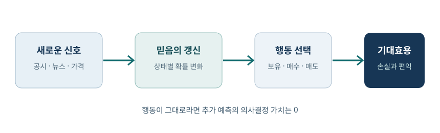

값싼 예측과 AI의 경제학
인공지능을 금융에 적용한다는 말은 먼저 어떤 정보를 얻어 어떤 선택을 바꾸는가를 묻는 일이다. 예측의 가치는 그 예측으로 피할 손실과 새로 얻을 편익으로 측정한다. 이 장은 예측의 경제학에서 과업의 보완관계, 가격 조정, 자산가격 예측으로 이어진다. 수학에서 필요한 것은 조건부기대값, 탄력성, 회귀의 기초이며, 각각을 아래에서 다시 정의한다.
강좌의 지도
금융에서 AI는 공시 읽기, 신용심사, 거래, 위험관리처럼 다양한 일에 쓰인다. 공통 질문은 미래를 더 잘 예측하면 현재의 선택과 결과가 어떻게 달라지는가다. 다음 분기 매출을 맞혀도 주가에 이미 반영된 전망과 거래비용을 고려해야 매수 여부를 정할 수 있다.
각 사례에서 입력 시점 → 예측값 → 행동 규칙 → 비교 대상을 순서대로 적어 보자. 월요일 개장 전 공개된 공시로 다음 한 달의 초과수익률을 추정한다면, 예측값이 거래비용과 요구 위험보상을 넘을 때 주문하고 같은 위험의 기준 포트폴리오와 성과를 비교한다. 보유 현금과 위험한도가 달라지면 같은 예측값도 다른 주문량으로 이어진다. 네 요소를 사전에 고정해야 모형의 개선을 평가할 수 있다.
왜 금융에서 AI를 배우는가
금융의 입력은 공시, 뉴스, 가격, 재무제표처럼 풍부하지만 목표인 미래 초과수익률은 매우 시끄럽다. 같은 기술이라도 영수증 분류에서는 높은 정확도가 곧 생산성으로 이어질 수 있지만, 투자에서는 작은 예측 오차가 큰 손실로 번진다.
금융 수익률은 기업 실적뿐 아니라 금리, 유동성, 투자자 기대가 동시에 움직인 결과다. 예측 모형이 기업의 실적을 잘 맞혀도 시장이 이미 그 정보를 가격에 넣었다면 투자수익은 늘지 않는다. 실적 예측 오차와 가격 대비 초과수익 예측 오차를 별도로 기록해야 하는 이유가 여기에 있다.
가격은 이미 시장 참가자의 전망을 압축한 기준선이다. 매출 증가 확률을 70%로 예측했더라도 현재 가격이 그보다 더 낙관적인 전망을 반영한다면 매수 근거가 약하다. 반대로 확률 추정의 절대 정확도가 평범해도 시장 가격이 특정 위험을 과소평가했다면 유용할 수 있다. 그러므로 모형과 가격이 각각 무엇을 예상하는지 같은 단위로 비교해야 한다.
주식 매수 질문에 빠진 변수들
“삼성전자를 지금 사도 되는가”라는 질문은 답을 하나로 정할 수 없다. 투자 기간, 이미 가진 종목, 손실 감내 범위, 세금과 수수료가 빠졌기 때문이다. 같은 전망을 가진 두 사람도 현재 포트폴리오가 다르면 최적 행동이 다르다.
먼저 가능한 행동 \(a\)를 매수·보유처럼 정하고, 미래 상태 \(s\)마다 그 행동의 결과를 효용 \(U(a,s)\)로 평가한다. 효용은 돈의 액수와 같을 수도 있지만 위험을 싫어한다면 같은 금액의 이익과 손실을 다르게 평가할 수 있다. 상태 확률 \(p(s)\)로 효용을 가중해 더한 기대효용이 가장 큰 행동이 \(a^*=\arg\max_a\sum_s p(s)U(a,s)\)다. 여기서 \(\arg\max\)는 최대 기대효용의 값이 아니라 그 값을 만드는 행동을 돌려준다. AI의 예측은 주로 \(p(s)\)를 바꾸며, 목표와 투자 제약은 따로 정해야 한다.
효용식에 수치를 넣으면 결정 기준이 드러난다. 1만 원을 투자해 상승 시 2천 원을 얻고 하락 시 3천 원을 잃으며 두 상태만 가능하다면, 위험중립 투자자의 기대순이익은 \(2{,}000p-3{,}000(1-p)=5{,}000p-3{,}000\)원이다. 거래비용이 없다면 \(p>0.6\)에서만 매수한다. 상승 확률 60%는 정확히 무차별인 경계이고, 수수료나 위험 회피가 있으면 필요한 확률은 더 높아진다.
매매비용 100원이 추가되면 매수 확률 경계는?
기대순이익에서 100원을 빼면 \(5{,}000p-3{,}100\)원입니다. 위험중립 투자자는 \(p>0.62\)일 때 매수합니다. 비용이 커질수록 필요한 예측 확률도 높아집니다.
AI 충격과 한국 주식시장의 집중
한국 주가지수는 시가총액 가중이므로 소수 반도체 대형주의 변동이 지수 전체에 크게 반영된다. 미국의 장기금리 상승은 먼 미래의 이익을 현재가치로 환산하는 할인율을 높이고, AI 투자 수익성에 대한 의문은 예상 현금흐름을 낮출 수 있다. 두 힘이 동시에 작용하면 관련 기업의 가격은 더 민감하게 움직인다.
AI 기업 사이의 투자·클라우드 구매·반도체 공급 계약은 서로의 매출을 키우지만 현금흐름의 독립성을 보장하지 않는다. 한 고리의 투자 축소가 다른 고리의 매출 전망을 낮추는 공통 위험이 될 수 있다. 단순한 “AI 수혜주” 분류보다 자금의 출처와 최종 고객 수요를 추적해야 한다.
시가총액 가중지수에서 기업 \(i\)의 단순 기여는 대략 지수 내 비중 \(w_i\)와 그 기업 수익률 \(r_i\)의 곱 \(w_ir_i\)다. 비중이 큰 기업의 작은 하락도 여러 소형주의 상승을 덮을 수 있다. 이때 지수 하락을 곧바로 '모든 산업의 AI 전망 악화'로 읽지 말고, 기업별 기여도와 공통 금리 충격을 분리하자.
비중 20%인 종목이 5% 하락하고 나머지 80%의 가중평균 수익률이 0.5% 상승하면, 단순한 한 기간 지수 수익률은 \(0.2(-5\%)+0.8(0.5\%)=-0.6\%\)다. 다수 종목이 올라도 지수는 떨어진다. 다만 이 계산은 구성 비중을 기간 시작 시점에 고정한 일차 근사다. 원인을 찾으려면 금리·환율 같은 공통 충격과 기업별 현금흐름 뉴스를 따로 검토해야 한다.
값싼 예측의 경제학
예측은 아직 관찰하지 못한 값을 현재 정보로 추정하는 것이다. 비용이 내려가면 기업은 예전에는 예측 문제로 보지 않았던 업무까지 예측 가능한 조각으로 분해한다. 대출 심사에서는 “상환할까”뿐 아니라 “어떤 추가 서류가 판정을 바꿀까”도 예측 대상이 된다.
가격이 떨어진 재화의 사용량이 늘고, 함께 쓰는 보완재의 가치가 바뀐다는 미시경제학을 그대로 적용할 수 있다. 데이터 품질, 손실함수의 설계, 행동할 권한이 대표적인 보완재다. Prediction Machines의 관점은 AI를 만능 지능으로 부르기보다 어떤 투입의 가격이 내려갔는지 묻게 한다.
예측의 수요는 예측 자체보다 뒤따르는 행동의 손익에서 나온다. 한 대출의 정상 상환 시 순이익이 10만 원이고 연체 시 손실이 90만 원이라면 기대순이익은 \((1-p)10-p90=10-100p\)만 원이어서 위험중립 기준 승인 경계는 \(p=10\%\)다. 연체확률 추정치를 2%에서 1%로 고쳐도 결정은 그대로지만, 11%에서 9%로 고치면 승인 여부가 바뀐다. 자본규제와 간접비를 넣으면 실제 경계는 달라진다.
세 명제의 연결
첫째, 예측은 결정을 바꾸어야 가치가 있다. 둘째, 그 결정이 실제 결과로 이어지려면 업무의 다른 단계가 따라와야 한다. 셋째, 예측 비용이 충분히 내려가면 고객의 수요와 관련 노동·데이터의 가격이 조정된다.
세 명제는 개인의 선택, 기업의 생산과정, 시장 균형이라는 서로 다른 분석 수준이다. 한 건의 예측 성능을 기업의 총산출이나 시장 전체 편익으로 옮기려면 각 수준의 제약과 가격 변화를 계산해야 한다.
세 수준을 연결하는 간단한 장부를 만들 수 있다. 개인 수준에서 한 건당 절감액이 \(v\), 기업이 처리하는 건수가 \(q\)라면 직접 편익은 \(vq\)다. 그러나 도입 비용과 검토 인력이 필요하고, 시장에 서비스가 늘면 가격과 \(q\) 자체가 바뀐다. 한 건의 실험 효과를 전체 산업의 편익으로 곱할 때 이 변화를 빠뜨리지 않아야 한다.
예를 들어 분석 한 건에서 1만 원을 아껴도 승인 단계가 연간 1천 건으로 고정되어 있다면 직접 비용 절감은 최대 1천만 원이다. AI 덕분에 분석 가능한 후보가 1만 건으로 늘어도 승인 용량이 그대로라면 승인된 대출 수는 자동으로 늘지 않는다. 승인 인력이나 규칙을 바꾸어 용량이 커진 다음에는 수요와 부실 위험까지 새로 계산해야 한다.
의사결정을 바꾸지 않는 신호의 가치는 0
아직 신호 \(z\)를 보지 못하면 모든 상태에 대해 하나의 행동을 정해야 한다. 이때 최선의 기대효용은 \(V_0=\max_a E[U(a,s)]\)다. 신호를 본 뒤에는 \(z\)에 따라 상태확률을 갱신하고, 신호마다 가장 나은 행동을 고를 수 있다. 각 신호가 나올 확률로 그 결과를 평균한 값은 \(V_1=E_z[\max_a E[U(a,s)\mid z]]\)다. \(\max\)가 \(E_z\)의 안쪽에 있는 이유는 신호를 보고 행동을 바꿀 수 있기 때문이다. 원래 행동을 유지할 수도 있으므로 \(V_1\ge V_0\)이고, 정보의 가치는 \(V_1-V_0\)이다.
두 신호의 정답률이 달라도 최적 행동이 늘 같다면 행동 가치의 차이는 없다. 예컨대 투자 허용 범위가 너무 좁아 어떤 신호에도 같은 보유량을 유지한다면 더 정밀한 수익률 전망의 즉각적 가치는 0이다. 반대로 드문 파산을 맞히는 신호는 전체 정확도가 낮아도 큰 손실을 피하게 해 가치가 클 수 있다. 이는 Blackwell의 정보 비교를 금융 의사결정에 적용한 것이다.
신호 구매료가 \(c\)라면 순가치는 \(V_1-V_0-c\)다.
두 상태의 수치 예시를 보자. 매수하면 상승 시 \(+2\), 하락 시 \(-3\)이고 보유하지 않으면 0이며, 사전 상승확률은 50%다. 매수의 기대값 \(0.5(2)+0.5(-3)=-0.5\)이므로 원래는 매수하지 않는다. 신호가 '좋음'과 '나쁨'을 각각 절반의 확률로 내고, 그 조건부 상승확률이 각각 80%와 20%라면 좋을 때 매수의 기대값은 \(0.8(2)+0.2(-3)=1\), 나쁠 때는 음수다. 신호를 보고 좋을 때만 사는 가치 \(V_1=0.5(1)=0.5\)다. 이 값보다 신호 구매료가 높으면 사용하지 않는다.

지도와 압축
추상화는 정보를 버리는 일이다. 피카소의 황소 그림은 세부 묘사를 지우면서도 황소를 알아볼 특징을 남긴다. 지하철 노선도는 실제 거리와 방향을 왜곡해 환승 경로를 읽기 쉽게 한다.
좋은 압축은 목표 결정에 필요한 차이를 보존한다. 지하철 지도는 환승 경로에는 유용하지만 도보 시간에는 부정확할 수 있다. 금융 모형도 투자 손익을 좌우하는 꼬리위험과 발표 시점은 남겨야 한다.
두 회사의 실적을 모두 '순이익 20% 증가'로 압축해 보자. A는 본업의 반복 수익, B는 일회성 자산 매각 덕분이라면 내년 현금흐름 전망이 달라진다. 투자 결정을 위한 요약에는 이 차이가 남아야 한다. 과거 순이익 증가 여부만 분류한다면 같은 요약으로 충분하다. 좋은 압축의 기준은 사용할 결정이 정한다.
한 결정에 맞춰 만든 지도
현실 \(x\)를 표현 \(z=f(x)\)로 압축하고 예측 \(\hat y=g(z)\)에 따라 행동 \(a=h(\hat y)\)을 고른다고 하자. 같은 \(z\)를 가진 두 원문이 서로 다른 최적 행동을 요구한다면, 예측 모형을 아무리 개선해도 압축 단계에서 버린 정보는 복원하기 어렵다.
거대언어모형은 학습자료의 패턴을 압축해 답을 생성한다. 금융에서는 문장 요약의 매끄러움보다 의사결정에 필요한 수치, 부정문, 예외 조항, 기준일을 유지하는지가 중요하다. 공시의 “일회성 이익” 한 단어가 사라지면 이익의 지속성 평가가 달라진다.
계약금액, 종료일, 해지 조건, 연결대상 여부를 표로 추출하고 원문 위치를 붙이면 요약의 정확성을 항목별로 검증할 수 있다. 잘 읽히는 문장과 투자 판단에 충분한 기록을 각각 평가하는 방법이다.
결정에 충분한 표현은 같은 \(z\)로 압축된 원문들에서 가능한 행동의 기대손익 순위가 유지되어야 한다. 이는 모수 추정을 위한 충분통계량과 목적이 다르다. 손실이 큰 예외 조항 때문에 행동의 순위가 바뀌는 오류를 평균 정확도와 별도로 추적하면 압축의 약점을 찾을 수 있다.
공시에서 글자가 이미지일 때
문자 검색은 텍스트 층에 존재하는 글자를 찾는다. 실적 발표의 핵심 문단이 그림으로 삽입되면 사람이 보기에는 같은 문장이지만 기계의 단순 검색에서는 사라질 수 있다. 멀티모달 인식은 이미지의 글자를 읽어 이런 누락을 줄인다.
이미지에서 숫자를 추출한 뒤에는 회계적 의미와 투자 가치를 평가한다. 자산 매각 이익이 반복 가능한지, 현금 유입인지, 주가에 이미 반영됐는지는 원문 숫자만으로 결정되지 않는다.
OCR이 재무제표의 '(1,000)'을 '1,000'으로 읽으면 손실의 부호가 뒤집힌다. '1,000'의 단위를 원에서 백만 원으로 읽으면 금액은 백만 배 달라진다. 표의 행·열 제목과 회계기간까지 바뀌면 전년 대비 증가율도 거꾸로 계산된다. 값마다 원본 위치·단위·기간·부호를 저장하고, \(({\rm 당기}- {\rm 전기})/|{\rm 전기}|\)처럼 후속 계산을 정의해야 오류를 추적할 수 있다.
빠른 요약과 정확한 요약의 선택
분석가가 3일 걸려 오류율 1%인 결과를 내고 AI가 10초 걸려 오류율 5%인 결과를 낸다고 하자. “어느 쪽이 좋은가”는 오류 하나의 비용, 마감 시각, 사람이 후속 검토할 수 있는지에 달려 있다. 단순히 속도나 정확도 한 숫자로 고르지 않는다.
오류의 평균 비용을 \(L\), 지연 비용을 \(D\)라 하면 총 기대비용의 단순형은 \(C=p_{\mathrm{err}}L+D\)다. 중요한 공시를 잘못 읽어 큰 주문을 넣는 경우에는 \(L\)이 커서 검토 단계가 가치 있다. 반면 수천 개 문서에서 검토 후보만 찾는 1차 선별에는 빠른 도구가 유리할 수 있다.
사람의 확인이 오류 확률을 \(q\)에서 \(q'\)로 낮추고 오류 시 손실이 \(L\), 확인 비용이 \(c\)라면 기대 순편익은 \((q-q')L-c\)다. 오류 확률이 5%에서 1%로 줄고 오류 손실이 100만 원이면 기대손실은 4만 원 감소한다. 확인 비용이 2만 원이면 순편익은 2만 원이다. 이 판단에 쓰는 오류 확률은 별도 검증자료에서 확인해야 한다. 예를 들어 '95% 확신' 사례의 실제 오류율이 약 5%여야 그 숫자를 비용 계산에 쓸 수 있다.
암달의 법칙과 업무 병목
암달의 법칙(Amdahl's law)을 적용해 전체 처리시간을 1로 정규화하고, 자동화 가능한 부분이 \(p\), 그 부분의 속도가 \(s\)배가 된다고 하자. 새 시간은 자동화하지 못한 \(1-p\)와 빨라진 \(p/s\)의 합이다. 따라서 전체 속도 증가는 다음과 같다.
식의 분모를 직접 대입해 보자. 원래 100시간 중 30시간이 자동화 대상이고 이를 5배 빠르게 하면 새 총시간은 \(70+30/5=76\)시간, 속도는 \(100/76\approx1.32\)배다. '대상 과업이 5배 빨라졌다'와 '전체가 5배 빨라졌다'는 전혀 다르다. 새 병목인 70시간을 줄여야 다음 개선이 커진다.
\(s\to\infty\)일 때 전체 속도의 상한은 \(1/(1-p)\)다. 자동화 대상이 총시간의 30%라면 도구가 아무리 빨라져도 나머지 70%가 속도를 제한한다.
이 법칙은 같은 작업량을 순서대로 처리하고, 개선되지 않은 단계의 시간이 일정할 때 성립한다. 자동화 후 주문 후보가 더 많이 들어오거나 여러 업무가 병렬로 돌면 전체 처리량을 단순히 \(S\)배 할 수 없다. 특히 하루 승인 건수처럼 용량 제약을 묻는다면 작업 한 건의 소요시간과 대기열에 쌓이는 건수를 분리해 계산해야 한다.
영상의학 사례가 알려 주는 것
의사의 업무에는 영상 판독과 환자 상담, 협업, 시술, 법적 책임이 함께 있다. AI가 판독 시간을 줄이면 한 건당 필요한 사람의 시간과 검사 수요가 함께 변한다.
검사비가 낮아져 검사량이 늘면 상담·설명·후속 치료도 늘 수 있다. 고용 변화를 판단할 때는 한 건당 인력 절감률과 검사량 증가율을 같은 기간에 비교한다. 인구 고령화, 의료 수가, 양성 정원과 규제도 함께 바뀌므로 관찰된 고용 변화 전체를 AI의 효과로 돌릴 수는 없다.
필요한 총 노동시간을 \(H=hQ\)로 쓰면 \(h\)는 검사 한 건에 들어가는 사람의 시간, \(Q\)는 검사 건수다. AI로 \(h\)가 20% 줄고 \(Q\)가 10% 늘면 새 총시간은 \(0.8\times1.1=0.88\)배다. 검사량이 40% 늘면 \(0.8\times1.4=1.12\)배다. 이 산술은 고용의 가능한 방향을 보여 줄 뿐이고, 실제 인원은 근무시간 조정과 직무 재편에 따라 다시 달라진다.
암달 곡선의 평탄해짐
\(p=0.5\)이면 자동화 부분을 무한히 빠르게 해도 전체는 최대 2배이고, \(p=0.9\)라면 최대 10배다. 어느 단계가 전체 시간에서 큰 비중을 차지하는지에 따라 같은 도구의 효과가 달라진다.
거래 시스템에서 뉴스 분류를 빨리 해도 주문 한도 승인이나 결제 통제가 그대로면 총 처리량은 제한된다. 개선 전후에 각 단계의 소요시간을 재면 새 병목이 어디로 옮겨 갔는지 확인할 수 있다.
\(S(s)=1/(1-p+p/s)\)를 \(s\)로 미분하면 \(dS/ds=(p/s^2)/(1-p+p/s)^2=p/[(1-p)s+p]^2>0\)이다. \(0<p<1\)이면 분모가 \(s\)와 함께 커져 추가 개선은 작아진다. 이는 '더 큰 모형'에 투자할지 남아 있는 검토·집행 단계에 투자할지 고르는 기준이 된다.
예를 들어 \(p=0.5\)이면 \(s=2\)에서 전체 속도는 \(1/(0.5+0.25)=1.33\)배, \(s=10\)에서 \(1/(0.5+0.05)=1.82\)배다. 자동화 부분을 2배에서 10배로 다섯 배 더 빠르게 해도 전체 증가는 약 0.49배에 그친다. \(p=1\)이라면 남은 병목이 없으므로 \(S=s\)이고 이 평탄화 논리는 적용되지 않는다.
과업 생산성과 총량 효과의 차이
고객상담, 글쓰기, 소프트웨어 개발 같은 개별 과업에서 AI가 시간을 줄인다는 실험은 중요하다. 그러나 임금·고용·GDP는 기업의 도입률, 품질 검토, 수요 증가, 가격 하락, 다른 과업으로의 재배치가 합쳐진 균형 결과다. 개별 과업의 처리속도 증가를 총량 생산성 증가와 동일시할 수 없다.
측정에도 시차가 있다. 초기에는 설치·학습·프로세스 재설계 비용이 들고, 나중에야 보완투자가 이루어진다. 반대로 총량 지표에 변화가 아직 작다고 해서 미시적 편익이 없다는 뜻도 아니다. 생성형 AI와 상담 생산성 연구는 과업 수준의 비교에 유용하다.
과업의 시간 비중, 기업의 도입률, 절감된 시간이 새 산출로 전환되는 비율이 총량 효과를 결정한다. 전체 노동시간의 10%를 차지하는 과업에서 시간을 40% 아끼고 기업의 절반이 도입했다면, 산출량이 고정된 상태에서 평균 노동시간의 직접 절감은 \(0.1\times0.4\times0.5=0.02\), 즉 2%다. GDP 효과는 절감된 시간을 어디에 쓰는지, 산출 품질과 자본 투입이 어떻게 변하는지에 따라 달라진다.
싸진 예측이 재평가하는 것
예측 서비스의 한계비용이 내려가면 고객은 같은 예산으로 더 많은 예측을 이용할 수 있다. 이때 예측과 함께 쓰는 데이터·판단·집행 능력의 수요도 변한다. 그 가치가 누구에게 돌아가는지는 각 투입의 희소성과 공급 탄력성에 달려 있다.
노동은 한 덩어리가 아니다. 자동화된 과업을 많이 수행하는 노동과 예측을 해석·책임지는 노동은 보완 또는 대체 관계가 다르다. 따라서 “AI가 임금을 올린다/내린다”보다 어떤 과업의 수요가 늘고 공급이 얼마나 빨리 따라오는지 묻는 편이 정확하다.
예측과 사람의 예외 판단이 보완재라면 예측 가격 하락은 예외 판단의 수요곡선을 오른쪽으로 옮긴다. 판단 인력을 빠르게 양성할 수 있으면 고용량이 주로 늘고, 공급이 단기에 고정되어 있으면 임금이 더 오른다. 고유 데이터를 가진 기업이 모방을 막을 수 있다면 잉여를 얻지만, 정보가 표준화되어 쉽게 이동하면 경쟁을 통해 고객에게 편익이 돌아간다.
제번스 역설의 그림
에너지 효율이 개선되면 같은 이동 거리의 연료비가 내려간다. 비용이 낮아져 주행거리가 늘 수 있으므로 차량 한 대의 효율과 사회 전체의 연료 사용량은 반대 방향으로 움직일 수 있다. 그림의 혼잡한 도로는 단위당 투입 감소와 총투입 증가가 양립하는 경우를 보여 준다.
한 건의 자원투입을 \(e\), 처리 건수를 \(Q\)라 두면 총투입은 \(E=eQ\)다. 효율 개선으로 건당 자원투입이 원래의 \(k\)배(\(0<k<1\))가 되면, 건수가 \(1/k\)배를 넘을 때 총투입이 증가한다. 분석 시간이 10분에서 2분으로 줄었다면 건수 3배에서는 총시간이 \(0.6\)배, 8배에서는 \(1.6\)배가 된다. 건수가 정확히 5배면 총시간은 그대로다.
탄력성으로 보는 반등
앞 슬라이드의 총자원 항등식 \(E=eQ\)에서 \(e\)는 서비스 한 건당 자원, \(Q\)는 이용 건수다. 곱의 로그를 취하면 \(\ln E=\ln e+\ln Q\)이므로 작은 변화에 대해 \(d\ln E=d\ln e+d\ln Q\)다. 로그 변화는 퍼센트 변화에 가깝다. 서비스 가격 \(P\)가 내려갈 때 수요가 얼마나 늘어나는지는 양수로 정의한 가격탄력성 \(\varepsilon=-d\ln Q/d\ln P\)로 나타낸다. 건당 자원 \(e\)와 가격 \(P\)가 같은 비율로 낮아진다면 \(d\ln e=d\ln P<0\)이고, 따라서 \(d\ln E=(1-\varepsilon)d\ln P\)다.
\(\varepsilon>1\)이면 \(d\ln P<0\)에 대해 \(d\ln E>0\)가 되어 반등이 효율 절감을 넘어선다. 의료영상 검사가 저렴해지면 검사 대상을 넓힐 수 있지만, 보험 규칙과 진료 지침이 수요를 제한할 수도 있다. 탄력성은 사례마다 추정해야 한다.
건당 자원과 서비스 가격이 같은 비율로 변한다는 가정은 전력 외의 인력·저장비용이나 가격 전가율이 달라지면 깨진다. 작은 변화의 미분식을 큰 시장 변화에 적용할 때는 탄력성이 일정한지도 확인해야 한다.
일정한 탄력성이라는 강한 가정 아래서는 유한한 변화도 계산할 수 있다. 가격과 건당 자원투입이 모두 원래의 \(k\)배가 되고 \(Q\propto P^{-\varepsilon}\)이면 \(Q_{\rm new}/Q_{\rm old}=k^{-\varepsilon}\), \(E_{\rm new}/E_{\rm old}=k^{1-\varepsilon}\)다. \(k=0.5\), \(\varepsilon=1.5\)라면 총자원은 \(0.5^{-0.5}=\sqrt{2}\)배가 된다. 이 식은 가격 전가가 불완전하면 그대로 사용할 수 없다.
역사적으로 효율 개선과 총 연료사용 증가가 함께 나타나도 인구·소득·산업 규모가 동시에 바뀌었다면 그 숫자만으로 가격탄력성을 추정할 수 없다. 반등의 크기에는 가격 변화가 없었을 때의 사용량이라는 반사실이 필요하다.
기술과 직업의 역사
증기기관, ATM, 스프레드시트는 모두 한 과업의 비용을 낮췄다. 은행 창구에서는 현금 인출 업무가 줄어도 지점 운영과 고객 상담의 상대적 중요성이 커질 수 있었다. 회계에서는 계산 자동화와 함께 감사·해석 업무가 늘었다.
과거 사례에서는 직업명보다 어떤 과업이 줄고 남은 서비스의 수요가 얼마나 늘었는지를 봐야 한다. ATM 도입 뒤 창구 인원이 늘었다 해도 같은 기간의 은행 합병, 인구 이동, 모바일뱅킹 확산을 분리해야 ATM의 고용 효과를 추정할 수 있다. 적절한 반사실은 ATM이 없었을 때 비슷한 지역의 창구 고용이 어떻게 변했을지다.
약한 고리와 GDP
경제 전체의 산출을 서로 보완적인 여러 부문의 함수로 보면 작은 부문의 생산성을 무한히 높여도 전체 산출은 다른 부문에 묶인다. 암달의 법칙이 시간의 합으로 이를 보여 준다면, 보완적인 생산함수는 가치의 합과 대체 가능성까지 고려한다.
대체탄력성 \(\sigma<1\)은 한 부문의 산출을 다른 부문의 산출로 바꾸기 어렵다는 뜻이다. 법률 검토가 빨라져도 법원 절차가 일정하면 전체 사건 처리량의 증가는 작다. GDP 효과를 추정할 때는 자동화 대상의 부가가치 비중과 대체탄력성을 함께 정해야 한다. Jones와 Tonetti의 생산성 논의는 이 제약을 수량화한다.
두 단계가 한 단위씩 짝지어야 하는 극단에서는 \(Y=\min\{A,B\}\)로 쓴다. 하루 처리 능력이 각각 100건과 20건이면 전체는 20건이고 첫 단계만 두 배로 늘려도 같다. 이 Leontief 생산함수의 대체탄력성은 0이다. 실제 경제에서는 여러 산업의 부가가치가 합쳐지고 투입도 일부 대체할 수 있어 이 최소식이 GDP를 직접 나타내지는 않는다. 이 예는 보완성이 강할 때 생산성 향상이 다른 단계의 용량에 묶이는 경로를 보여 준다.
분석 가격이 내려갈 때 희소해지는 것
공시의 숫자와 문장을 찾아 정리하는 비용이 크게 낮아지면 예전에는 전문 서비스 구매자만 하던 검색을 더 많은 사람이 할 수 있다. 연 2만 달러 서비스와 월 20달러 도구를 비교하면 연간 결제액은 \(20{,}000/240\approx83.3\)배 차이다. 이 비율을 같은 품질의 분석 한 건당 가격으로 쓰려면 데이터 범위, 오류 책임, 라이선스, 감사 가능성이 같아야 한다.
공개 공시를 읽는 비용이 낮아지면 같은 정보를 쓰는 투자자가 늘어 가격 반영도 빨라질 수 있다. 공시를 읽고 예상한 가격 상승폭이 0.3%여도 왕복 스프레드·수수료·시장충격이 0.4%면 거래의 예상 순수익은 음수다. 거래 가능한 알파를 재려면 공시 접수부터 실제 주문 가능 시각까지의 지연을 기록하고, 그 시점 이후의 가격 변화에서 체결비용을 빼야 한다. 차별적 데이터와 낮은 실행비용은 이 계산에서 경쟁 우위가 될 수 있다.
내 일의 위험을 평가하는 세 질문
첫째, 일의 모든 과업을 자동화할 수 있는가. 둘째, 가격이 내려가면 그 서비스의 수요가 충분히 늘어나는가. 셋째, 남은 보완 과업의 공급이 제한되어 있는가. 세 질문을 함께 보아야 자동화와 임금의 방향을 추론할 수 있다.
신용분석가의 시간이 자료 입력 40%, 예외 검토 30%, 고객 소통 20%, 승인 책임 10%로 나뉜다고 하자. 입력이 전부 자동화되어 건당 사람 시간이 10시간에서 6시간으로 줄어도, 신청량이 50% 늘면 총 노동시간은 \(6\times1.5/10=0.9\)배다. 남은 과업의 공급이 부족하면 총 노동시간이 조금 줄어도 시간당 보수는 오를 수 있다. 이처럼 과업 비중, 신청 수요, 남은 인력의 공급을 차례로 측정한다.
데이터 모형에서 예측 모형으로
전통 통계는 자료의 생성 과정을 확률모형으로 표현해 모수를 해석한다. 알고리즘적 접근은 함수의 형태를 유연하게 두고 새 자료의 예측오차를 평가한다. 금융에서는 두 접근 모두 정보 시점과 표본외 성능을 검증해야 한다.
예측은 기존 대출 제도 아래의 \(P(\text{연체}\mid X)\)를 추정한다. 소득이 연체를 잘 예측해도 소득지원 정책이 연체율을 얼마나 바꿀지는 별도의 인과 질문이다. 소득이 신용이력이나 고용안정성의 대리변수일 수 있고, 승인 기준을 바꾸면 새로 대출받는 차주의 구성도 달라진다. 대출 승인 순위를 정할 때는 예측력을, 현금지원 효과를 평가할 때는 개입 뒤의 결과를 검증한다.
대출 승인 정책이 바뀌면 예측모형을 왜 다시 평가하나요?
새 정책은 승인되는 차주의 구성을 바꿉니다. 과거에는 대출받지 못해 연체 결과가 관찰되지 않은 집단이 들어오므로 기존 표본의 연체율과 오류율이 그대로 유지된다고 볼 수 없습니다.
브라이먼의 두 문화
데이터 모형 문화는 예컨대 \(y=X\beta+\varepsilon\)을 가정해 \(\beta\)의 의미와 유의성을 해석한다. 알고리즘 문화는 함수 \(f(X)\)를 유연하게 고르고 미사용 자료의 예측오차를 줄인다. 전자는 설명 가능한 모수에 강하고 후자는 복잡한 비선형 패턴에 강할 수 있다.
여러 모형이 거의 같은 예측력을 갖는 라쇼몽 효과가 있으면 최고 점수 하나를 ‘진실’로 해석하기 어렵다. 단순성과 정확도의 상충도 자료와 목적에 따라 달라진다. Breiman의 원문을 읽을 때 모델의 목적이 설명인지 결정인지 먼저 구분하자.
두 문화는 같은 데이터에 다른 질문을 던진다. '금리가 한 단위 바뀌면 주가가 얼마나 변하는가'는 개입과 누락변수를 다루는 구조적 질문이고, '내일 어떤 종목의 손실 가능성이 큰가'는 당시 관측 가능한 변수로 시험할 예측 질문이다. 경제 이론으로 정보 시점과 제약을 정한 뒤 유연한 모형을 비교할 수도 있다. 계수 해석에는 함수 형태와 오차 가정을, 투자 결정에는 미래 자료의 오차와 비용을 중심에 둔다.
두 문화의 원문을 읽는 법
브라이먼은 확률모형의 형태 가정이 현실과 어긋날 때 모형 내부의 표준오차만으로 성능을 확신하기 어렵다고 지적했다. 모형의 타당성을 평가하려면 잔차, 안정성, 표본외 성능을 함께 봐야 한다.
예를 들어 회귀의 \(p\)값이 작다는 것은 특정 귀무가설과 오차 가정 아래 현재 자료가 드물다는 뜻이다. '이 변수의 경제적 효과가 크다'거나 '다른 기간에서도 통한다'는 확률을 직접 말해 주지 않는다. 계수 크기, 불확실성 구간, 표본외 오차, 매매 후 순이익을 서로 다른 표에 놓고 읽어야 한다.
회귀를 반복해서 고른 뒤 마지막 모형의 \(p\)값만 보고하면 해석은 더 어려워진다. 예를 들어 100개 변수를 시험해 가장 작은 \(p\)값을 선택했다면, 선택 전에 정해 둔 한 검정과 귀무분포가 다르다. 계수에 유의성이 필요하면 탐색 범위를 기록하고 다중검정이나 새 표본의 재현을 고려한다. 거래 가능성은 다시 포지션 크기와 순수익으로 확인한다.
금융이 이론 중심 접근을 고수한 이유
고객과 감독당국은 왜 신용을 거절했는지, 왜 특정 위험을 보유하는지 설명을 요구한다. 또한 금융 수익률의 신호는 약하므로 자유도가 높은 모형은 과거 우연을 외우기 쉽다. CAPM 같은 이론은 어떤 위험에 보상이 주어져야 하는지 검증 가능한 제약을 제시한다.
예측 관계는 행동이 바뀌면 약해질 수 있다. 어떤 공시 문구 뒤에 주가가 천천히 오른다는 규칙이 알려지면 투자자가 발표 즉시 매수해 상승분을 앞당긴다. 과거 자료의 규칙을 시장 참여자의 반응과 독립된 자연법칙으로 취급하면 안 되는 이유다.
이론은 모형의 입력을 줄이는 장치이기도 하다. 모든 기업 특성의 모든 조합을 허용하면 우연히 높은 과거 성과를 찾기 쉽지만, 경제적으로 가능한 현금흐름·할인율 경로로 범위를 좁히면 탐색 공간이 줄어든다. 다만 이론적 제약이 틀리면 진짜 패턴을 놓칠 수 있으므로, 이론 모형과 유연한 모형을 같은 시점의 새 자료에서 비교해야 한다.
요인모형의 언어
종목 \(i\)의 단순수익률을 \(R_i\), 무위험수익률을 \(r_f\)라 하고 초과수익률을 \(r_i=R_i-r_f\)로 정의하자. 요인모형은 \(E[r_i]=\beta_i^\top\lambda\)로 쓴다. \(\beta_i\)는 시장·가치·수익성 같은 공통 충격에 대한 노출이고 \(\lambda\)는 그 충격 한 단위에 대해 요구되는 보상이다. CAPM에서는 시장 요인 하나만 두므로 \(E[r_i]=\beta_{iM}E[r_M]\)가 된다. 여기서 \(r_M=R_M-r_f\)다.
베타는 요인과 얼마나 함께 움직이는지, 프리미엄 \(\lambda\)는 그 노출에 시장이 얼마를 보상하는지를 나타낸다. 장부가치/시가총액이 높은 종목의 수익률이 높아도 위험 보상과 가격오류 중 무엇이 원인인지는 추가 검정이 필요하다. 위험 보상이라면 해당 종목이 투자자의 소비나 재산이 줄어드는 나쁜 시기에 손실을 주는지 살펴야 한다.
CAPM의 시장 베타는 \(\beta_{iM}=\operatorname{Cov}(r_i,r_M)/\operatorname{Var}(r_M)\)로 계산한다. 시장이 1% 움직일 때 종목이 평균적으로 얼마나 함께 움직이는지 나타내는 선형 민감도이지, 그 종목의 전체 위험이나 미래 한 달 수익률의 확정값은 아니다. 종목 고유의 변동이 아무리 커도 충분히 분산 가능한 위험이라면 CAPM의 기대수익률 식에는 별도 보상이 붙지 않는다. 식을 검정할 때는 무위험수익률과 요인 수익률의 측정 시점도 맞아야 한다.
요인 동물원과 다중검정
수백 개 특성을 하나씩 검정하면 참효과가 전혀 없어도 높은 \(t\)값이 우연히 나올 가능성이 커진다. 참효과가 모두 0이고 300개 검정의 개별 거짓 양성 확률이 각각 정확히 5%라면 기대 거짓 발견 수는 \(300\times0.05=15\)개다. 이는 발견이 반드시 15개 나온다는 뜻이 아니다.
따라서 “한 논문에서 \(|t|>2\)”는 충분하지 않다. 독립 표본, 발표 뒤 성과, 거래비용, 관련 변수 통제, 검정 횟수를 확인해야 한다. Harvey·Liu·Zhu의 다중검정 연구는 더 높은 발견 기준의 필요성을 제기한다.
왜 독립성이 없어도 기댓값을 구할 수 있는가? \(j\)번째 검정이 잘못 기각되면 1, 아니면 0인 지시변수를 \(I_j=1\{p_j\le0.05\}\)라 두고 전체 개수를 \(V=\sum_{j=1}^{300}I_j\)라 쓰자. 기대값의 선형성으로 \(E[V]=\sum_jE[I_j]=\sum_jP(p_j\le0.05)\)다. 각 검정의 오류확률이 정확히 5%면 15이고, 5% 이하로 통제된다면 최대 15다. 검정끼리 상관되면 실제 발견 개수가 함께 몰리는 정도와 최대 \(t\)값의 분포는 바뀐다. 경제적으로 비슷한 특성을 반복 정의하거나 유리한 표본만 골랐다면 애초에 각 \(p\)값의 보정도 별도로 확인해야 한다.
극단을 비교하면 의존의 역할이 선명해진다. 300개 검정이 독립이면 하나라도 잘못 기각될 확률은 \(1-0.95^{300}\)으로 거의 1이다. 반면 완전히 동일한 검정을 300번 복제하면 5%의 실험에서 300개가 한꺼번에 통과하고 나머지 95%에서는 0개이므로, 하나라도 통과할 확률은 5%뿐이다. 두 경우 모두 기대 개수는 15다. 따라서 기댓값, 한 번의 실험에서 하나라도 발견할 확률, 발견 개수의 변동은 서로 다른 지표다.
유의한 결과가 15개일 때 진짜 효과는 몇 개인가요?
유의한 개수만으로는 알 수 없습니다. 거짓 발견의 기대값 15는 모든 참효과가 0인 반복 실험의 평균입니다. 실제 자료의 진짜 효과 비율과 검정력을 추가로 알아야 합니다.
머신러닝의 동일 경기장
Gu·Kelly·Xiu는 다수 미국 주식과 기업 특성을 사용해 선형 회귀, 벌점 회귀, 차원 축소, 나무, 신경망을 비교했다. 핵심은 같은 정보 시점과 같은 미래 기간을 기준으로 성능을 채점하는 것이다. 모형이 복잡할수록 과거 적합도가 높다는 사실만으로 승자를 정하면 불공정하다.
특성과 거시 상태의 상호작용은 “같은 기업 특성도 경기 상태에 따라 의미가 달라진다”는 가설을 표현한다. 예를 들어 레버리지의 가격 효과가 금리 상승기에 커질 수 있다. 연구 원문은 이러한 비선형 상호작용이 예측 개선의 중요한 원천이라고 보고한다.
2015년 종목을 예측할 때는 당시 공개된 재무제표를 써야 한다. 나중에 수정된 데이터베이스의 최종 값이나 상장폐지 종목을 제거한 목록을 쓰면 미래 정보가 섞인다. 결측치 처리와 재학습 빈도도 모형 사이에 맞추고, 검증 결과로 모형을 고른 뒤 시간상 마지막 시험 기간을 최종 평가에 사용한다.
작은 표본외 결정계수의 의미
표본외 결정계수는 \(R^2_{\rm OOS}=1-\mathrm{SSE}_{\rm model}/\mathrm{SSE}_{\rm benchmark}\)이다. 월별 개별 주식 수익률은 예측 불가능한 변동이 크므로 0.4% 같은 숫자는 작아 보여도 실제 예측 가능한 성분의 차이를 나타낼 수 있다. 단, 통계적 개선과 거래 가능한 이익은 다르다.
모형의 우수성을 읽을 때 기준 예측이 0인지 과거 평균인지 확인해야 한다. 분모가 달라지면 같은 예측에도 \(R^2\)가 달라진다. 공매도 제약, 회전율, 거래비용을 빼고 계산한 포트폴리오 성과도 별도로 검토한다.
수치로는 기준선의 제곱오차합이 1,000이고 새 모형의 합이 996일 때 \(1-996/1000=0.004\)다. 이 차이는 개별 주식의 큰 잡음 속에서 유용한 신호일 수도 있지만, 신뢰구간과 기간별 안정성을 보지 않으면 우연인지 알 수 없다. 또한 양의 \(R^2_{\rm OOS}\)가 있어도 모형이 추천하는 종목에서 회전율이 높으면 비용 뒤 수익은 음수가 될 수 있다.
공개된 예측 신호의 이익 감소
한 뉴스 신호가 널리 알려지면 투자자는 가격에 그 정보를 더 빨리 반영한다. 신호가 가리킨 종목을 모두가 먼저 사면 나중에 얻을 초과수익은 줄어든다. 거래 규모가 커질수록 호가 충격과 매매비용도 늘어난다.
발표 뒤 성과 감소에는 정보가 가격에 빨리 반영된 효과, 처음 연구의 우연한 표본 선택, 추종 자금이 키운 거래비용이 섞인다. McLean·Pontiff는 발견과 출판 뒤의 성과를 비교한다. 발표 전 월평균 총 초과수익이 0.5%, 발표 뒤 0.2%라면 먼저 총수익의 변화를 보고, 발표 뒤 왕복비용 0.3%를 빼면 투자자의 순수익은 \(-0.1\%\)다. 표본 기간과 전략 규칙을 맞춰야 감소의 원인을 더 좁힐 수 있다.
계산 규모와 사전 지식
서튼의 “쓴 교훈”은 사람이 세세한 규칙을 집어넣는 방법보다 계산과 학습을 넓게 활용하는 일반적 방법이 장기적으로 우세했던 사례를 정리한다. 금융의 손으로 만든 단어 사전이나 고정된 요인 조합도 이 관점에서 재검토할 수 있다.
경제 이론과 제도는 대규모 학습의 허용 범위와 평가 기준을 정한다. 거래비용, 시간 순서, 데이터 누출 방지, 예산 제약을 반영해야 성능을 실제로 측정할 수 있다. Sutton의 글은 방법론 선택의 배경을 제공한다.
금융에서는 계산 규모와 함께 훈련 목표와 독립 표본의 수가 중요하다. 다음 단어를 잘 예측해도 투자 판단에 필요한 근거가 부족할 수 있고, 한 번의 금융위기나 제도 변경에서 독립 사례를 대량으로 만들 수는 없다. 실제 투자 시점의 정보만 입력해 시점 밖·시장 밖 성과를 확인하고, 희귀 충격은 별도 시나리오로 점검한다.
이중 하강과 금융 데이터
고전적 편향·분산 그림에서는 모형을 복잡하게 할수록 처음에는 오차가 줄다가 과적합으로 다시 오른다. 일부 과매개변수 모형에서는 훈련자료를 정확히 보간하는 지점 뒤에 시험 오차가 다시 내려가는 이중 하강이 관찰된다.
훈련오차가 0에 가까워지는 보간 경계 부근에서는 잡음까지 맞혀 시험오차가 커질 수 있다. 그보다 훨씬 큰 모형에서 최적화 알고리즘이 상대적으로 단순한 해를 찾으면 시험오차가 다시 줄기도 한다. 그래프의 가로축을 변수 수만으로 읽기보다 유효 자유도, 자료 구조, 최적화의 암묵적 정규화를 함께 봐야 한다. Belkin 등은 기본 현상을 제시한다.
금융 시계열은 짧고 시장 구조가 변하므로 이중 하강을 기대해 모형을 키우는 것만으로는 충분하지 않다. 시간 순서에 맞춘 여러 표본외 기간에서 같은 곡선이 나타나는지 확인하고, 선택된 전략의 거래비용까지 계산한다.